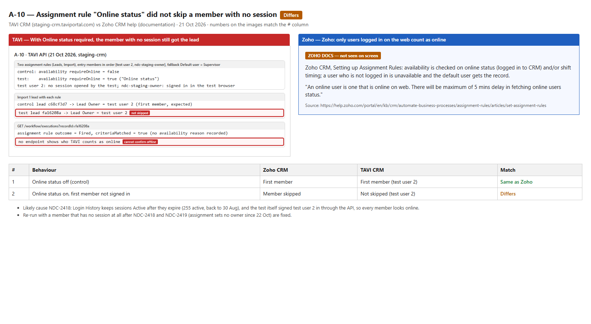

CRM automation: follow-up findings and open decisions
Follow-up to the CRM automation execution-order run (bug report). On 21 Oct 2026 every case that was still open was re-run on staging. This page holds the two new findings from that round and everything that needs a decision before go-live. B-17 is published as NDC-2411.
Host staging-crm.taviportal.com (tenant NDC-Staging)Method Selenium (Owner) + API (CRM Admin), each case with a controlDate 21 Oct 2026
1 bug (NDC-2411)1 possible bug (inconclusive)7 decisions needed
Findings
Before you start
Assignment rules run only on Import, API and Web Form records, not on records created by hand. Both cases use an import.
Use a test user you can suspend and reactivate. These runs used "test user 2" (valafo4080), and it was reactivated afterwards.
An assignment rule still assigns records to a suspended user
A rule whose only member was suspended still made that user the owner of an imported lead. The rule's fallback user was not used. In Zoho, deactivated users are skipped and the default user gets the record.
Steps to reproduce
Settings → Assignment Rules → create a rule on Leads, channel Import. One entry: all records → user A. Fallback: Default user = user B. Activate it.
Settings → Users → user A → ⋮ → Suspend.
Import one lead and choose this assignment rule.
Open the lead and check Lead Owner. Then reactivate user A (⋮ → Reactivate).
Expected (Zoho)
The suspended user is skipped and the default user B becomes the owner.
Actual (TAVI)
The fallback is never used. On screen (22 Oct, two Jams, workflows off and on) the lead got no owner; in the 21 Oct API run it was assigned to the suspended user.
A-10 · possible bugPublished · NDC-2422 (child of NDC-2418)Assignment Rules
Assignment rule "Online status" did not skip a member with no session
With "Check availability based on: Online status" ticked, the lead still went to the first member, test user 2, who had no session open. A control rule without the availability check gave the same owner. TAVI shows nobody's online status, so it can't be proven that test user 2 was offline. Another session may have been signed in as that user.
Steps to reproduce
Make sure user A is signed out everywhere for at least 10 minutes, and user B is signed in.
Create a rule on Leads, channel Import, one entry with members [A, B] in that order, Online status ticked, fallback Default user C.
Import one lead with the rule and check Lead Owner.
Expected (Zoho)
A is skipped (not logged in on the web), so B gets the lead. Zoho notes up to 5 minutes delay in online status.
Actual (TAVI)
A got the lead (lead fa16208a); control c68cf3d7 also went to A.
Cause (22 Oct)
Login History keeps sessions "Active" after they expire: 255 active sessions, 245 past their expiry, back to 30 Aug, so every user looks online (NDC-2418). Import/API assignment also stopped setting owners on 22 Oct (NDC-2419).
Needed
From dev: how TAVI decides "online", and a way to see it (none of the API or screens show it). Then re-run with a user known to be signed out.

A-10: TAVI (left, annotated) vs Zoho CRM documentation (right). Same Zoho source as B-17.
Decisions needed
#
Decision
Why it matters
Options
1
Publish B-17: done
Published 22 Oct as NDC-2411 with both Jams.
–
2
A-10: ask dev how "online" is decided
Without it, Online status availability can't be tested and may not work at all.
Ask dev / file as a question; re-run once answered.
3
API channel for B-19, G-02, G-12, G-15, G-18
These cases need records created through the real API channel. Settings → API Integration can create an integration client, but creating credentials wasn't permitted in this run.
(a) You create a QA client and share access, (b) allow me to create one and delete it afterwards, or (c) leave these 5 cases untested.
4
Lead → Deal conversion (H-01, H-07)
Lead Conversion Mapping has no field mappings for Deals, so converting never creates a Deal and the Deal chain after conversion can't be tested.
(a) The team sets up the Deals mapping, or (b) I add one temporarily and restore it right after. It's tenant-wide, so teammates' conversions would create Deals during the test.
5
Public web forms (A-02 web form, G-08, E2E-1)
The public web-form session still returns 404 on staging (re-checked 21 Oct), so the Web Form channel can't be tested.
Ask the team to enable the public web-form endpoint or share a working form URL.
6
H-04: decided
Same as Zoho: Convert stays available on a lead in a blueprint (Zoho can only hide it for everyone through profile permission).
Not a bug.
7
E-04: done
The email arrived ("QA AEO V6 E-04 after-transition email 18:29:16").
Pass. The B-13 review SLA also emailed the reviewer ("Review SLA breached").
Also from this round
Passed: A-13 and G-05 (update import: no reassignment; workflow → approval → blueprint in order), J-04 (task completion), E-16 (NDC-1328), K-09 (NDC-1645 / 1652), B-13 (review SLA escalation), K-10 (NDC-1672), and the Selenium UI smoke tests UI-01 to UI-06.
Published: B-16 → NDC-2391 (a workflow condition on Lead Owner never matches).
Observation: an update import still requires every required field (for example Phone) in the file.
Cleanup: everything the tests created was removed; test user 2 is active again.